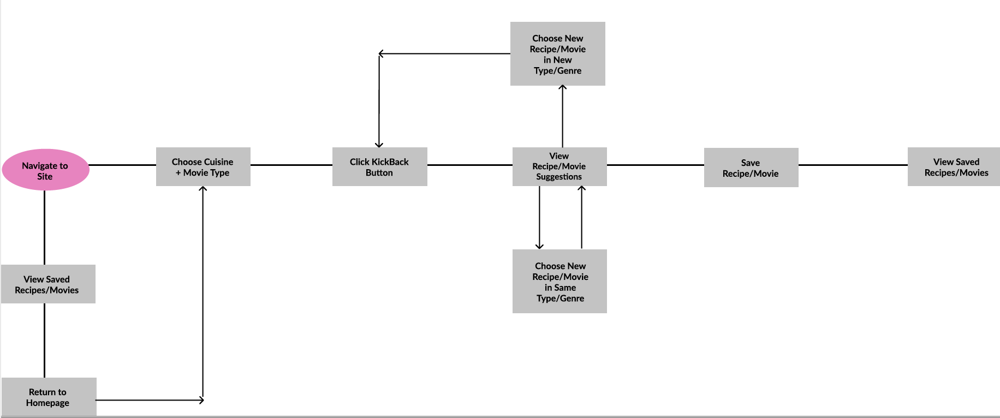

KickBack!
Project Overview
Team: Briana daMota, Alex Chigas, Rochelle Ruiz, Jackelin Salinas
My Roles: UX Design Lead, Front-end Developer
Time Period: 2 Weeks (July 2020)
Design Tools: Figma, Pen & Paper
Technologies: HTML5, CSS3, Bootstrap, JavaScript, OMDB API, MovieDB API, Spoonacular API
Background | User Interviews | User Personas | Problem Statement | User Story |
Decision Flow Diagram | Paper Sketching | Rapid Prototyping | Low-Fidelity Wireframe |
User Testing Feedback | High-Fidelity Prototype | MVP | Retrospective & Future Development
In the wake of Covid-19, everyone is adjusting to the new normal. Social distancing requirements have forced people to drastically change their routines. Going out with friends for dinner and a movie has become an increasingly stressful activity. And there’s a greater need to find recipes to cook and movies to watch at home. Deciding what to eat and view can be frustrating and time-consuming in the best of times. During a pandemic... it’s overwhelming.
What if there was a simple, easy to navigate application that took the work out of planning the perfect night in?
Kickback! is a web-based app that randomly generates movie and recipe suggestions from the user’s choice of movie genre and cuisine type. A user visits the site, makes two simple decisions, and lets the app do the heavy lifting. Kickback! makes it easier to stay in, relax and enjoy quality time with loved ones.
User Interviews
To best utilize our limited time we decided to interview classmates from our coding cohort. Our main goals for the user interviews were:
- • Gain insight into how the quarantine was affecting the user's daily routine.
- o How often did they go out before the stay-at-home orders?
- o How likely were they to cook dinner and watch a movie at home pre-pandemic?
- - How has that changed during the pandemic?
- • Understand how users were using apps to make daily decisions.
- o Were they using apps before the pandemic to make recipe and movie decisions?
- - If yes, what were their pain points while using the apps?
- - If yes, what features did they like about the apps?
- - If no, why didn't they use apps?
The individuals we interviewed ranged from age 21-49; were single, married with children and in relationships. Their professions were student, vet tech, athletic coach, web developer, and teaching assistant. With our limited sample, we captured a wide range of ages, life stages, and careers. This helped us in better understanding our broad user base. The information gathered from the interviews revealed some common themes.
- • All of the users had been “moderately” to “very” social outside of their homes pre-pandemic.
- • 40% of the users were likely to cook at home at least twice a week pre-pandemic. 80% of the users were likely to cook at home at least twice a week during the pandemic.
- • All of the users were likely to watch a movie at home at least once a week both pre-pandemic and during the pandemic.
- • 40% of users were using apps to find recipes pre-pandemic. 60% of users were using apps to find recipes during the pandemic.
- • All users used streaming apps to find movies to watch both pre-pandemic and during the pandemic.
- • There was a general sentiment that there were too many choices returned in searches.
- • Users who used recipe apps enjoyed the ability to search by cuisine type, ingredients and cooking difficulty level.
- • Users who used recipe apps found that they couldn't always save the recipes, which would allow them to more easily create grocery lists and cook the dish more than once.
After the interviews were conducted, I created two user personas to visually represent the information we gathered. These tangible representations reminded us of our user's needs and goals.
Recipe and streaming apps are designed to make searching for dishes and movies easier. After our initial research, we found that this isn’t always the case. Often streaming apps provide the users with too many choices and recipe apps don’t have enough features to fully satisfy the consumer. With this knowledge, we set out to develop a single application that improved upon both recipe and streaming apps.
To illustrate the expectations of a user who visits KickBack!, I created a simple user story.

We came up with a decision flow diagram that addressed the problem statement and provided a solution that would help ease pain-points.

Each group member created a paper sketch that demonstrated their idea of the application. My sketch included "home" and "saved" screens.

We created and tested a rapid prototype based on the sketches. We found out about a particular UI improvement at this stage, which was to add a button for the users to click after they made their cuisine and genre choices. This also turned out to be necessary for the functionality of the application to work properly. Additionally, after researching the intended recipe API, we found it would be difficult to anticipate the length of each recipe. Instead of using a scroll feature to account for the overflow text, we chose to have a photo of the final dish and allow the user to click-through to the recipe's original site.
Using our decision flow diagram, wireframe sketches, and feedback from our users, I created an initial set of low-fidelity wireframes in Figma. The below wireframes demonstrate a user's experience with KickBack! First, they arrive at the site and choose a cuisine type and movie genre from dropdown menus. After hitting the KickBack! button, they are shown one movie and one recipe suggestion. To change their recipe and movie choice, or to save the recipe and movie they click the related buttons. Once satisfied with their choices, they can click-through to view the recipe. At any point, the user can view their previously saved movies and recipes.

After testing and discussing the wireframes with our classmates, they suggested we add some instructions for how to maneuver the site. This would lead to a better and easier user experience.
I incorporated the user feedback into a high-fidelity design that included additional text, final fonts and color pallet. I also took the time to create a logline and find royalty-free photos that conveyed the overall fun, family-friendly tone of our site. At this point, we decided which features to include in our MVP. We chose the following features, which are reflected in the clickable prototype:
- • Allow users to choose cuisine type and movie genre.
- • Allow both movie and recipe suggestions to be changed and saved.
- • Give users the ability to click-through to see the recipes on their original site.
With the research and prototyping, we were able to confidently build the application. The development process went relatively smoothly because we understood the limitations of the APIs we chose and created a design to accomodate. The only modification of the clickable prototype is that the saved movies and recipes show up on the homepage. There was not enough time to develop the "saved" page. Regardless, our MVP exceeded our development expectations.
Visit Site

Kickback! fills a unique opening in the market for consumers who are figuring out how to navigate the new realities of social distancing. It addresses the need consumers have to make quick decisions about recipes and movies on a daily basis. Through future development, KickBack! will allow for brands to serve targeted ads to users. Future development plans include:
- • Enhance user experience by adding additional API to find which streaming services host the movie suggestions.
- • Allow users to search by movie rating and recipe difficulty.
- • Add feature to allow users to save recipe ingredients.
- • Develop additional screen that shows saved movies, recipes, and ingredients. Design navbar to reflect home and saved pages.
- • Scale app by adding delivery services.
- • Make app sponsorable by designing capability to serve ads (video and banner).
← Back to Portfolio